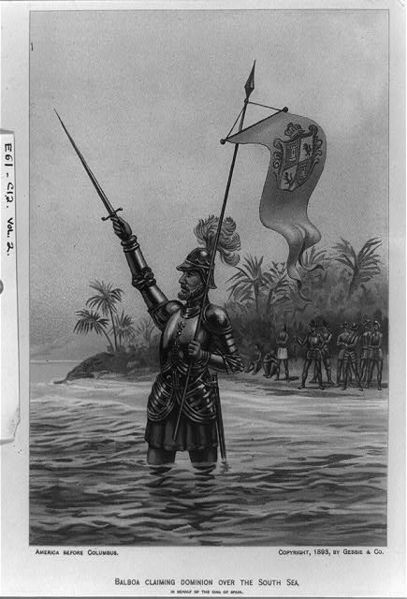
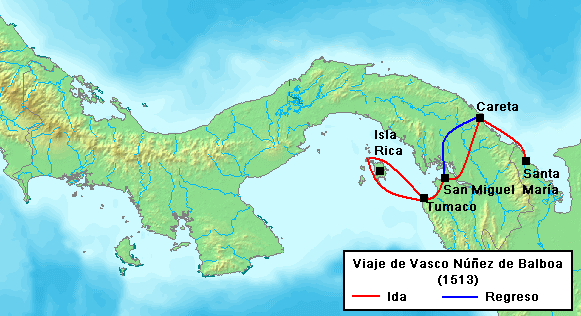

Carlos HTML© 2015 Privacy policy
Inicio
La noticia inesperada de un nuevo mar rico en oro fue tomada muy en cuenta por Núñez de Balboa. Decidió regresar a
Santa María a comienzos de 1513 para disponer de más hombres provenientes de La Española, y fue ahí cuando se enteró que Fernández de Enciso
había persuadido a las autoridades coloniales de su versión de lo ocurrido en Santa María. Entonces, Núñez de Balboa envió a Enrique de
Colmenares directamente a España para buscar ayuda, en vista que no había habido respuesta de parte de las autoridades de La Española.
Busqueda del nuevo mar
En Santa María se organizaban expediciones en busca del nuevo mar. Algunos recorrieron el río Atrato hasta diez leguas hacia el interior, sin
ningún éxito. La petición de más hombres y suministros en España fue denegada porque el caso de Fernández de Enciso ya era conocido por la
Corte española. Así, a Núñez de Balboa no le quedó más remedio que emplear los pocos recursos que tenía en la ciudad para emprender el
descubrimiento. Tuvo la sabiduría de apoyarse en gran medida en los indígenas, conocedores de todos los secretos de la selva: rutas a seguir,
dónde aprovisionarse de agua, cómo encender fuego. Usando varios informes dados por caciques indígenas amigos, Núñez de Balboa emprendió
el viaje desde Santa María a través del istmo de Panamá el 1 de septiembre de 1513, junto con 190 españoles, algunos guías indígenas y una
jauría de perros. Usando un pequeño bergantín y diez canoas indígenas navegaron hasta las tierras del cacique Careta. El día 6 se internaron
junto con un gran contingente de mil indígenas de Careta, entre ellos Ponquiaco, hacia las tierras de Ponca, que se había reorganizado;
pero fue vencido, sometido e hizo alianza con Núñez de Balboa. Luego de varios días y uniéndose varios hombres de Ponca se remontaron a la
espesa selva el día 20.
Llegada a la selva
Avanzaron con algunas dificultades, encontrando tribus de piel negra. Llegaron el día 24 a las tierras del cacique
Torecha, que dominaba el poblado de Cuarecuá. En este poblado se desencadenó una férrea y persistente batalla; Torecha fue vencido y muerto
en combate. Al irrumpir en la casa de Torecha, los conquistadores descubrieron a su hermano "en traje de mujer" rodeado de otros notables.
Los españoles interpretaron la escena como un harén homosexual y los ejecutaron a todos echándolos a los perros.15 Tras la batalla, los
hombres de Torecha decidieron aliarse con Núñez de Balboa, aunque gran parte de la expedición estaba exhausta y malherida por el combate
y muchos de éstos decidieron hacer descanso en Cuarecuá. Núñez de Balboa decidió proseguir el camino con un destacamento de 67 españoles y
un número indeterminado de indios,20 entre los cuales se encontraban Ponquiaco y Francisco Pizarro.21 Se internaron a las cordilleras del
río Chucunaque. Según informes de los indígenas, desde la cima de esta cordillera se podía ver el mar, así que Núñez de Balboa se adelantó
al resto de los expedicionarios y antes del mediodía logró llegar a la cima y contemplar, lejos en el horizonte, las aguas del mar desconocido.
Los demás se apresuraron a demostrar su alegría y felicidad por el descubrimiento logrado por Núñez de Balboa. El capellán de la expedición,
el clérigo Andrés de Vera entonó el Te Deum Laudamus, mientras que el resto de los hombres erigieron pirámides de piedras e intentaron con
las espadas grabar cruces e iniciales sobre la corteza de los árboles del lugar, dando fe que en ese sitio se había realizado el descubrimiento.
Todo eso ocurrió el 25 de septiembre de 1513. Pasado el momento
del descubrimiento, la expedición bajó de las cordilleras rumbo al mar y se internó en las tierras del cacique Chiapes, que fue vencido en un
breve combate e invitado a colaborar con la expedición. De la comarca de Chiapes salieron tres grupos en busca de caminos que llegaran al mar.
El grupo que lideraba Alonso Martín llegó a sus orillas dos días después, embarcándose en una canoa y dando fe que había navegado por primera
vez dicho mar.
Descubrimiento del mar del sur
De regreso avisaron a Núñez de Balboa y éste marchó con 26 hombres que llegaron a la playa; Núñez de Balboa levantó sus manos,
en una su espada y en la otra un estandarte con una imagen de la Virgen María; entró al mar hasta las rodillas y tomó posesión de él en nombre
de los soberanos de Castilla, Juana y Fernando. Balboa bautizó al golfo donde estaban como San Miguel, porque fue descubierto el día de San
Miguel Arcángel, 29 de septiembre y al nuevo mar como Mar del Sur, nombre dado entonces al Océano Pacífico, por el recorrido que tomó la
exploración al llegar a dicho mar.23 Este hecho fue un jalón importante en la larga búsqueda llevada a cabo por los españoles de una ruta
marítima a Asia por occidente. Posteriormente, Balboa se dedicó a la búsqueda de las comarcas ricas en oro. Recorrió las tierras de los
caciques Coquera y Tumaco, a los que venció fácilmente y arrebató sus riquezas en oro y perlas. Se enteró después que las perlas se producían
en abundancia en unas islas donde regía Terarequí, un poderoso cacique que dominaba esa región. Así Núñez de Balboa decidió embarcarse en canoa
hacia esas islas, a pesar que era el mes de octubre de 1513 y las condiciones meteorológicas no eran las mejores. Apenas logró divisar las
islas, y llamó Isla Rica (hoy Isla del Rey) a la mayor de éstas; y a toda la región la llamó Archipiélago de las Perlas, nombre que aún posee
en la actualidad. En noviembre, Núñez de Balboa decidió regresar a Santa María la Antigua del Darién pero por una ruta diferente, para seguir
conquistando territorios y obtener mayores riquezas con su botín. Atravesó las comarcas de Teoca, Pacra, Bugue Bugue, Bononaima y Chiorizo,
venciéndolos a algunos con fuerza y otros con diplomacia. Cuando llegó a los territorios del cacique Tubanamá, Núñez de Balboa tuvo que
enfrentarlo con mucha violencia y lo logró vencer; en diciembre llegó a las tierras del cacique Pocorosa en el golfo de San Blas, ya en el
Caribe y luego se dirigió a las tierras de Comagre, donde ya el cacique había muerto por la edad y su hijo Panquiaco había sido nombrado el
nuevo cacique. De ahí decidió atravesar las tierras de Ponca y Careta, para finalmente llegar a Santa María el 19 de enero de 1514, con un
gran botín de artículos de algodón, más de 100 mil castellanos de oro, sin contar con la cantidad de perlas; además obviamente del
descubrimiento de un nuevo mar para los españoles. Núñez de Balboa asignó a Pedro de Arbolancha para que viaje a España con la noticia del
descubrimiento y envió la quinta parte de las riquezas obtenidas al rey, tal como lo establecían las leyes.
Imagen romántica de Vasco Núñez de Balboa tomando posesión del Mar del Sur.
Ruta del viaje de Núñez de Balboa al Mar del Sur en 1513.
